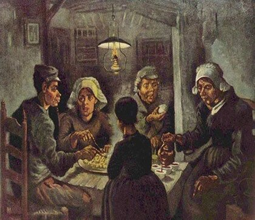

Historia
Vincent van Gogh se convertiría en uno de los artistas más conocidos del mundo. Sus pinturas han tocado a culturas de todo el mundo, y él se convertío en el arqueotipo de "artista torturado."
Van Gogh nació en 1853 y creció en Holanda. Fue criado en una familia religiosa con su padre siendo un ministro. Cuando terminó sus estudios, Vincent siguió la profesión de su tío y se convirtió en un comerciante de arte aprendiendo el comercio en Holanda y luego trabajando en Inglaterra y Francia. Vincent tuvo éxito e inicialmente fue contento con su trabajo. Sin embargo, pronto se cansó de la empresa de arte, especialmente en París, y perdió interés en el comercio. Después de regresar a casa, Vincent comenzó estudiar teología. Si bien muy apasionado y entusiastico, él falló los exámenes para entrar en un par de programas. Característico de su personalidad, era inteligente, capaz de hablar varios idiomas, pero él no creía que el latín era una lengua para predicar a los pobres. Durante este período, trabajó como misionero en una comunidad minera de carbon viviendo con los pobres trabajadores gente comúnes. A medida que su desarrollo como un predicador estaba estancando, su interés a aquellos alrededor de él aumentaba. Su vida como artista comenzaba.

En 1880, a 27 años de edad, Van Gogh entró en el Académie Royale des Beaux-Arts en Bruselas, Bélgica. El invierno siguiente, viviendo en Amsterdam, Vincent se enamoró, su corazón se había roto, y comenzó a pintar. Los próximos años se traduciría en poco éxito tanto en el amor y el arte. Comedores de Patatas de Van Gogh, su primera gran obra, fue pintado en 1885. Por este tiempo, todavía estaba teniendo dificultades para encontrar el amor, pero estaba empezando a recibir intereses en sus pinturas. Ahora se dedica plenamente a la pintura: viviendo ahorrativa, estudiando teoría del color, y admirando las obras de artistas como Peter Paul Rubens. Lamentablemente, como sería su vida entera, sus pinturas eran todavía difíciles vender. Su hermano Theo, un comerciante de arte y el recipiente de muchas cartas de Vincent, comentó que debería haber más color en sus obras. Van Gogh pintaba a campesinos y paisajes rurales usando tonos de la tierra oscuros. Alrededor de este mismo tiempo,Impresionismo, con sus colores vivos y brillantes, se hacía popular.
Al año siguiente, Vincent se trasladó a París donde su arte comenzó a tomar el estilo que le haría famoso. En París, él estaba discutiendo arte con algunos de los artistas más vanguardistas e influyentes de su tiempo – pintores como Gauguin, Bernard, y Toulouse-Lautrec. Él estaba usando más color, aplicando la pintura con gruesas pinceladas audaces, y pintado todo lo que le rodeaba. Van Gogh dispuesta a mostrar su trabajo, a las revisiones positivas, pero aún así no pudo vender ninguna obra. Uno de los sueños de Van Gogh como artista fue la de iniciar una colonia de artistas en Arles, en el sur de Francia. Vincent se trasladó a Arles donde fue acompañado por Gauguin. Una vez allí, Van Gogh entró en el período más productivo y creativo de su vida a pintar su famoso Girasoles. Sin embargo, también fue una época de gran agitación por Vincent comenzando un período de estancia en el hospital para enfermedades mentales y deterioro físico. Después de tan sólo diez años de pintura y producir unas 900 pinturas, Vincent van Gogh se quitó la vida en 1890. Nunca apreciado en su tiempo, no tendría mucho tiempo para que el mundo del arte a reconocer el genio que perdieron. Veinte años después de su muerte, había espectáculos conmemorativos de sus trabajos por todo el mundo que influyen en las generaciones de artistas por venir.